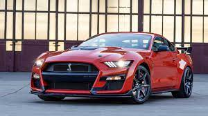
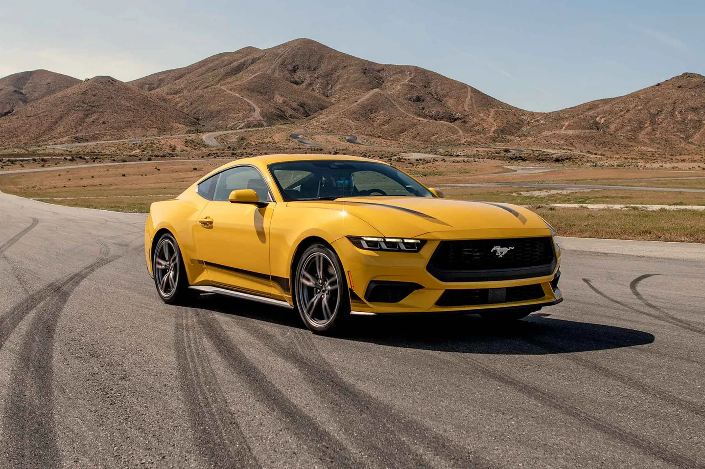
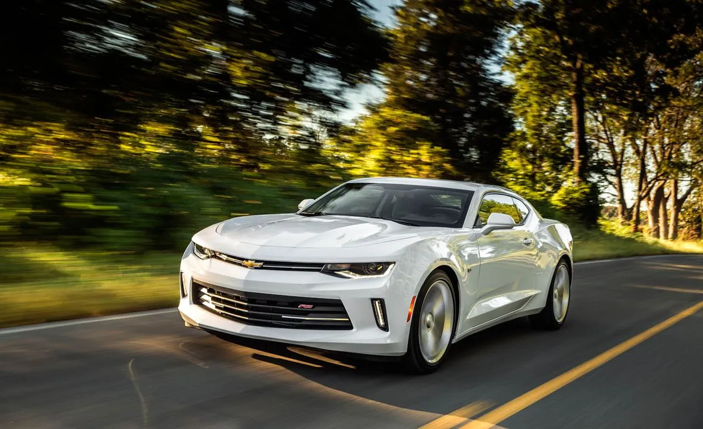

Mobil keluaran amerika ini telah diuji kecepatannya pada tanggal 14 Februari 2014 di landasan pacu pesawat luar angkasa milik NASA di Florida yang mempunyai panjang lintasan sejauh 3,22 mil. Hasilnya sungguh menakjubkan, mobil ini bisa berlari dengan kecepatan maksimal mencapai 435 km/jam atau 270 mil/jam yang dihasilkan dari sebuah mesin berkapasitas 7.0 Liter

Ford Mustang Ecoboost adalah versi yang lebih terjangkau dari ikonik Ford Mustang. Mesinnya adalah empat silinder 2.3 liter turbocharged yang menghasilkan tenaga yang mengesankan. Dengan desain yang memukau dan kinerja yang mantap, Mustang Ecoboost menawarkan pengalaman mengemudi yang memuaskan

Chevrolet Camaro V6 adalah varian dari legendaris Chevrolet Camaro yang menawarkan kombinasi antara gaya dan performa. Mesin V6 3.6 liter memberikan akselerasi yang seru tanpa mengorbankan efisiensi bahan bakar. Dengan desain yang agresif, Camaro V6 adalah pilihan menarik bagi penggemar mobil sport.